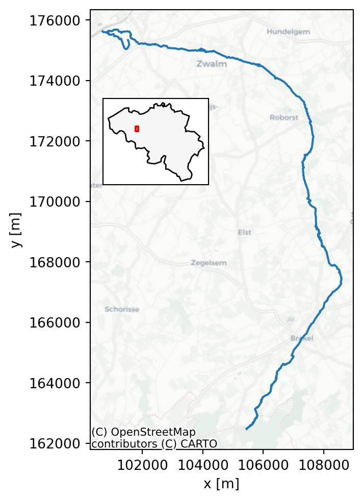

Downloading file 'NUTS_RG_10M_2024_3035.gpkg' from 'https://gisco-services.ec.europa.eu/distribution/v2/nuts/gpkg/NUTS_RG_10M_2024_3035.gpkg' to '/home/runner/.cache/geodatasets'.
For these exercises, a hydrological dataset of the Zwalm catchment will be used. The Zwalm catchment is located in the center of Belgium and can be considered a medium-scale catchment. Its main tributary, the Zwalmbeek, is visualised in Figure 3.1. During the period 2009-2025, a dataset of daily precipitation, potential evapotranspiration and discharge is at your disposal (see Section 3.3 for more information). The average annual rainfall and potential evapotranspiration of the catchment are 735 mm and 561 mm respectively, typical values for Belgium.
Downloading file 'NUTS_RG_10M_2024_3035.gpkg' from 'https://gisco-services.ec.europa.eu/distribution/v2/nuts/gpkg/NUTS_RG_10M_2024_3035.gpkg' to '/home/runner/.cache/geodatasets'.
As mentioned in Chapter 2, all the processed data is available at data/processed. If interested, you can inspect (and execute) all downloading and processing steps yourself by following the instructions in scripts/data_download/README.md and scripts/data_process/README.md.
In the next section, more information is given on the data sources and processing steps for the different types of provided data. Note that all geographic data is provided in the Belgian Lambert 72 (BD72, EPSG:31370) coordinate reference system (CRS).
The data in the data/processed/catchment_info folder contains information on the river network and the catchment boundaries in the broad vicinity of the Zwalm catchment. The source of the river network is the Vlaamse Hydrografische Atlas (Vlaamse Milieumaatschappij 2026). The catchment boundaries come from the Oppervlaktewaterlichamen en hun afstroomgebieden, 2022-2027 dataset (Vlaamse Milieumaatschappij 2023). In Chapter 4, you will be asked to delineate the catchment boundary of the Zwalmbeek yourself. The provided catchment boundaries can be used for comparison. Both files are provided as ESRI Shapefiles, called afstroomgebied.shp and vlaamse_hydrografische_atlas.shp respectively.
For the catchment delineation of Chapter 4, a digital terrain model (DTM) is provided in data/processed/digital_terrain_model. This DTM is derived from the Digitaal Hoogtemodel Vlaanderen II DTM at 1m spatial resolution. (Agentschap Digitaal Vlaanderen 2014). To reduce the size of the dataset and speed up the computation, the DTM has been resampled to a spatial resolution of 10.0 m by averaging. The DTM is provided as a GeoTIFF file, called DHMVII_DTM_1m_upscaled_10m.tif.
Both meteorological forcings and observed discharge are provided in data/processed/forcings_discharge. All this data is retrieved from Waterinfo, a website which combines hydro(meteorological) data from both the Flanders Environment Agency and Flanders Hydraulics Research. Programmatic access to the data is possible via the Python package pywaterinfo, as demonstrated (for your information only) in scripts/data_download/waterinfo_download.py.
The combined forcings and discharge dataset is provided in the CSV file forcings_discharge.csv. An overview of the the original data sources is given in Table 3.1. The variable “Precipitation of catchment” is a combination of rainfall gauge and radar data, representative for the Zwalm catchment. Potential evapotranspiration is estimated using the Penman equation. Note that because the
| Variable | Units | Station | Station ID | x [m] | y [m] |
|---|---|---|---|---|---|
| Precipitation | mm | Maarke-Kerkem_P | P06_014 | 100 828 | 167 846 |
| Precipitation of catchment | mm | Nederzwalm/Zwalmbeek | L06_342 | 101 966 | 175 227 |
| Potential Evapotranspiration | mm | Waregem_ME | ME05_019 | 82 595 | 172 779 |
| River Discharge | m³/s | Nederzwalm/Zwalmbeek | L06_342 | 101 966 | 175 227 |